Ranger
Ranged damage; the world itself.
The hunters of the Wildwood and the trackers of the Isles, who fight beside a bonded beast.
Spellbook
Role: Ranged DPS (physical, nature) · Resource: Focus + Pet Bond · Races: Blight-Born, Sylvani, Thornkin, Beast-Touched, Tide-Born, Half-Bloods
Combines advanced mechanical rifles or crossbows with knowledge of nature and animal companions that fight at their side.
In Orvessa: rangers are the first to notice when the Deep rises: the animals flee before anyone else knows why. Their companions can smell a Hollowed long before a person can see the ember in its eyes.
| Level | Spell | Effect |
|---|---|---|
| 1 | Aimed Shot | Basic attack |
| 4 | Call Companion | Summons an animal companion |
| 8 | Mark Prey | Marks a target |
| 10 | Pet Command | Commands |
| 14 | Serpent Sting | DoT |
| 18 | Wing Clip | Slow |
| 22 | Explosive Arrow | AoE |
| 26 | Camouflage | Stealth in nature |
| 32 | Multi-Shot | Hits several targets |
| 38 | Revive Pet | Revives your companion |
| 46 | Hunter's Mark | Increased damage against the target |
| 54 | Wild Call | Calls more animals |
| 60 | Apex Predator | Ultimate: you and your pet are invulnerable for 8 s |
Talent trees
- Beast Bond: Pet Resilience, Bestial Wrath, Pack Tactics, Spirit Link. Capstone: Alpha Companion.
- Marksman: Improved Aimed Shot, Sniper's Eye, Mechanized Scope, Piercing Bolt. Capstone: Headshot.
- Wildstalker: Natural Camouflage, Poison Arrows, Trapper's Instinct, Pathfinder. Capstone: Hunter of the Wild.
Gallery

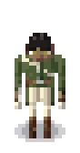

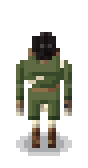

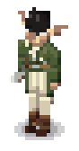

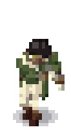

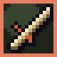

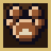

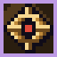

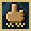

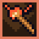

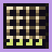

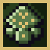

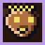